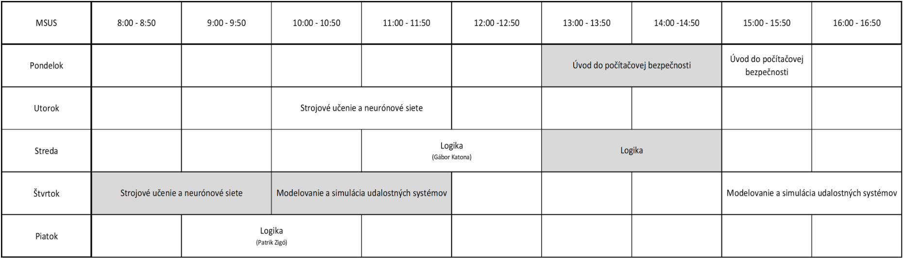

„Bicyklový tréner“
Predmet: Tímový projekt I-API
Zadávatelia:
Tím
bol založený s cieľom vyriešiť danú problematiku, ktorá má aj praktické využitie. Členovia tímu majú radi prácu, ktorá je hmatateľná a je vidieť výsledok práce. Téma „Bicyklový tréner“ je využiteľná v každodennom živote a zaujíma všetkých členov tímu.
Členovia tímu:
Gábor Katona (MSUS)
- skúsenosti zo spracovávaním kamerových záberov, a s rozpoznávaním dopravných značiek, skúsenosti s Raspberry Pi, znalosť programovacích jazykov Python, C/C++, Java, Php, JavaScript, HTML, CSS
Patrik Zigó (MSUS)
- skúsenosť s Eclipse IDE, znalosť programovacích jazykov Python, C/C++, Java, Php, JavaScript, HTML, CSS, C#
Motivácia
- Využiteľnosť skúseností v praxi a možno aj v budúcom povolaní
- Možnosť nabrať skúsenosti s Android aplikáciami.
- Vieme spojiť už nadobudnuté vedomosti (z riešenia bakalárskej práce) s novou témou
- Celý tím vlastní bicykle a sme športovci.
Plán projektu
- Analýza možností vývojovej dosky RSL10 a jej periférií.
- Umiestnenie senzorov a spracovanie dát zo senzorov.
- Vytvorenie aplikácie pre OS Android.
- Testovanie systému a optimalizácia užívateľských funkcií, ktoré spočívajú v možnosti porovnávania dosahovaných výsledkov a dávajú informácie pre používateľa.
- Vyhodnotenie.
Predpokladané zdroje
Materiálne
- Vývojová doska RSL10 a senzory.
- Bicykel
- Telefón s OS Android
- Solárny panel
- Počítač a v úlohe definované programy
Nemateriálne
- Informácie od zadávateľov
- Dostupné zdroje informácií z internetu a z literatúry
Rozvrh práce členov tímu
